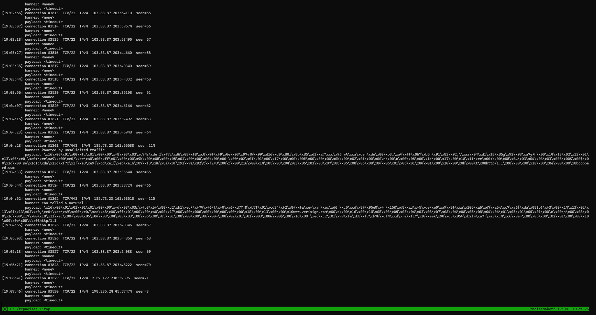
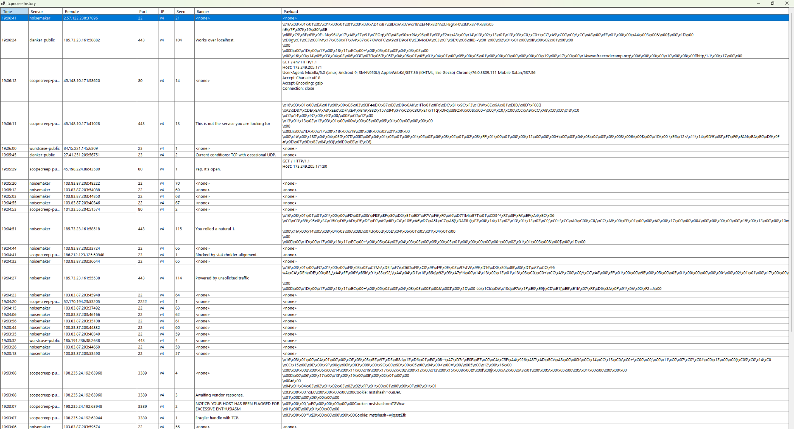
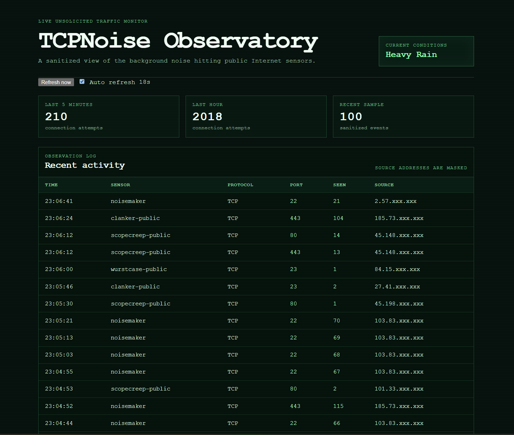

Keep collecting when NATS is down
Messaging is an integration path, not a dependency on whether the sensor can continue accepting and recording connections.
projects/tcpnoise
A small C socket-programming exercise that turned into a distributed collection of Internet-noise sensors, a live NATS event stream, a Windows app that makes scanners literally make noise, and a public sanitized observatory for watching the background Internet misbehave.
C · POSIX sockets · poll() · SQLite · NATS · .NET 10 · Razor Pages · FreeBSD / Linux
tcpnoise began as a project for learning lower-level socket programming in C on FreeBSD. The first idea was deliberately small: open a few TCP listeners, wait for unsolicited connections, and see what wandered in.
That immediately gives you surprisingly interesting test data. Public ports do not stay quiet for long. Scanners, bots, broken clients, probes, and things speaking completely the wrong protocol eventually arrive and start sending bytes.
The collector stayed intentionally low-level: POSIX sockets,
poll(), bounded payload capture, per-port logs, and SQLite
for persistent seen counts. It became a useful way to learn the boring
parts of network programming using traffic I did not have to invent.

At first I considered sending tcpnoise events into Mission Control. I was already using NATS there, so the integration path was obvious. The problem was that raw connection noise is exactly that: noisy. Feeding every scanner hit into the normal operational event stream would have turned useful infrastructure telemetry into a wall of junk.
Instead, tcpnoise got its own NATS subject. That was the point where it stopped feeling like only a C-learning exercise. Once the collector could publish a small event and continue doing its job even when NATS was unavailable, the possibilities became much larger than the terminal process itself.
Multiple sensors can now publish into the same event stream while identifying their site or logical network. The collector does not need to know whether the consumer is a tray app, a public website, a future statistics service, or something much stranger.
The first especially unnecessary consumer was TcpNoiseClicker, a small .NET Windows tray application that subscribes to the live event stream and plays a sound whenever a sensor receives a connection.
It also keeps a history view with the sensor, remote endpoint, destination port, IP version, banner state, bounded payload text, and persistent seen count from the collector. Muting stops the sounds without stopping event counting.
Some events get different sounds, including IPv6 traffic and a few deliberately special ports. Once NATS existed, adding that kind of consumer no longer required making the C collector responsible for desktop UI or audio behavior.

The traffic was interesting enough that I wanted a way to show it publicly without exposing the raw collector data or turning Mission Control into a public security dashboard.
Noise Observatory is a deliberately small, read-only view over the event stream. It shows recent sanitized activity, short-window counts, approved sensor names, destination ports, repeat-seen counts, and a derived "weather" label for how noisy the Internet currently feels.
The application is available over the normal Internet as well as DN42, Yggdrasil, and I2P. The core page remains server-rendered and uses local assets, so the alternate-network deployments do not depend on a pile of public frontend CDNs.

tcpnoise itself can observe more than the public site should expose. The Observatory therefore maps raw transport events into a deliberately smaller public model before they enter public-facing state.
Source addresses are deterministically masked. Raw captured payloads, source ports, internal/private addresses, credentials, and other fields that are not needed for the public view are discarded rather than merely hidden by the page.
That boundary also matters for the I2P deployment. The I2P Observatory instance does not get access to the private NATS broker or raw event contract. It polls the source Observatory's already-sanitized snapshot API and serves that public state locally inside I2P.
The remote mirror gets the public product, not the private plumbing.
Messaging is an integration path, not a dependency on whether the sensor can continue accepting and recording connections.
Internet background noise deserves its own stream instead of drowning higher-value Mission Control events.
The C collector stays small while desktop audio, public views, and future experiments evolve independently.
Public-facing state receives the reduced model. Raw payloads and complete source addresses never need to reach the public layer.
Noise Observatory is intentionally lightweight today, but the event stream leaves room for richer history and APIs later. I may eventually keep longer-term aggregate data or offer deeper access, but I have not committed to a public or paid historical-data product yet.
There are also less sensible directions. Internet Noise FM is an idea for turning the live connection stream into one continuous ambient radio station, while PacketGarden explores mapping sanitized network events into plants, fungi, weeds, and other things growing in a browser garden. Both are still early experiments rather than current features.
That is the part I like most about adding NATS to tcpnoise: the original C program can stay a small sensor while increasingly questionable ideas subscribe downstream.
tcpnoise is actively collecting real traffic from multiple sensors. TcpNoiseClicker consumes the live stream on Windows, and Noise Observatory is deployed publicly with a deliberately sanitized view of that same activity.
What started as a reason to practice C sockets on FreeBSD now has enough downstream consumers that the little listener is probably stuck being a real project.